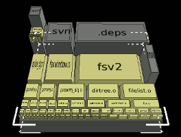
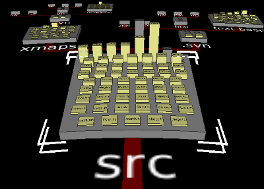

This section documents the various items accessible from fsv's top menu bar.
Restarts fsv in a different root directory. This brings up a directory selection dialog, and once a directory is specified, fsv will perform another scan and generate new file system geometry accordingly.
Quits the program.
This menu allows you to choose between fsv's various visualization modes. Each of these is a different approach to representing a file system. When you switch from one mode to another, the camera will automatically home in on the same node it was looking at before.

Each node is a block which sits on top of its parent directory. (Viewed from above, it is basically a Venn diagram). The area covered by each block is proportional to the size of the corresponding file system node.

Nodes are separated into two categories: platforms and leaves. Platforms are directories which have been expanded for viewing; everything else is a leaf, which sits on some platform. The platforms are connected by branches, reflecting the file system's directory structure. The height of a leaf node indicates its size.
This menu controls how colors are assigned to nodes.
Assigns colors according to each node's file system entity type, which can be one of the following:
Directory - Also known as a "folder"
Regular file - Most nodes are of this type
Symbolic link - These just point to another file
Named pipe (FIFO) - Very rare
Network socket - Even rarer
Character device - Found in /dev
Block device - Also in /dev
Unknown - ???
Assigns colors from a continuous spectrum representing time. The default setup employs a rainbow spectrum, coloring new files red, somewhat older files green, much older files indigo/violet, and so forth. Nodes which are too old (or too new) to occur within the spectrum's time range are shown darkened.
Brings up a setup dialog for the various color modes.
Launches a help browser.
Gives authorship and version information for the program.